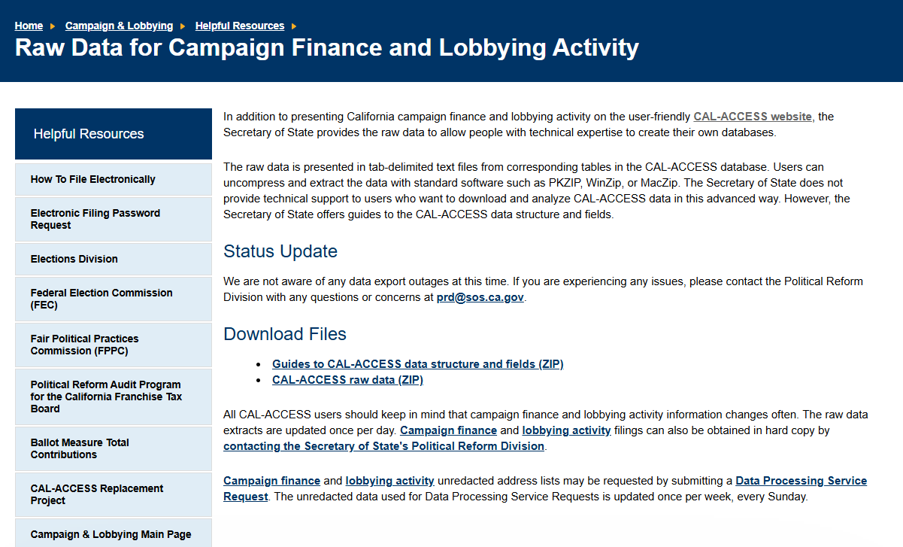
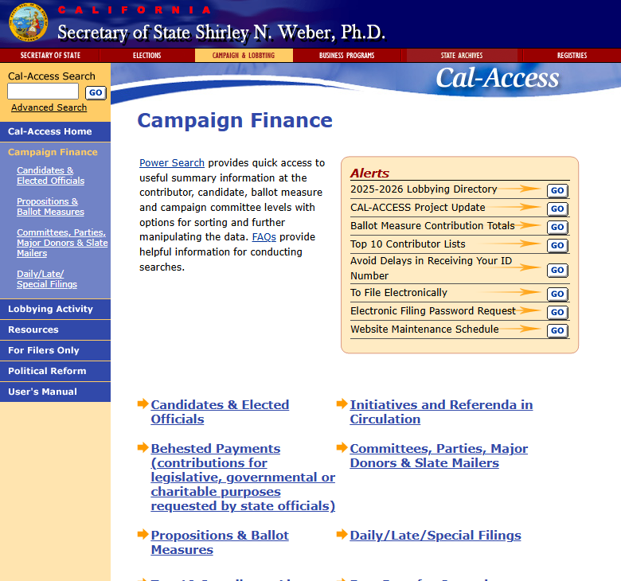
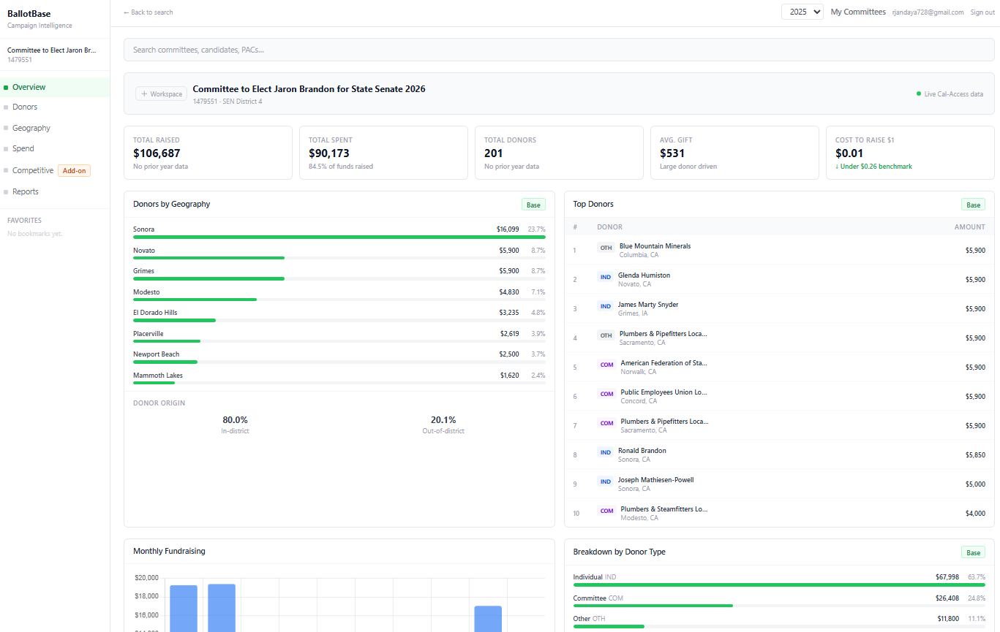
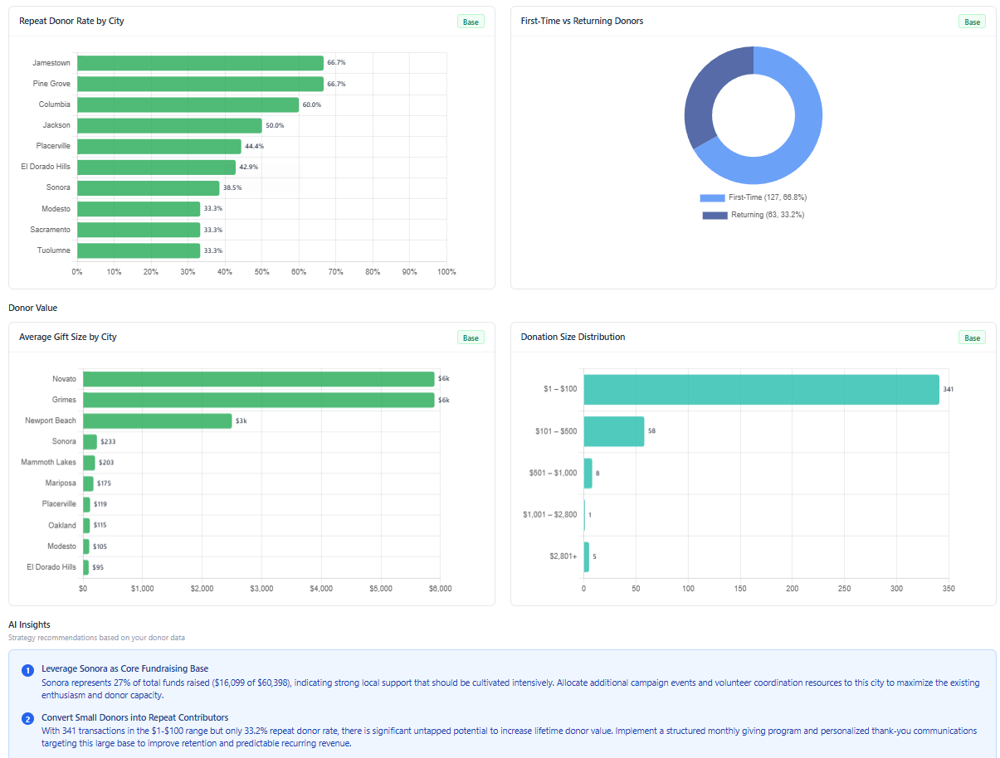

Cal-Access exists. It is public. And it matters.
It is also, for most people, basically unusable.
What Cal-Access Actually Is
Cal-Access is California's campaign finance disclosure system. Every dollar raised and spent in state politics lives here: every contribution, every independent expenditure, every payment to consultants, media buyers, and vendors. If money is moving through California politics, it is being reported into Cal-Access.
This is not optional. Campaigns are legally required to file it. Which means this is not just a useful dataset. It is the source of truth.
Why It Matters
California is one of the most expensive political environments in the country. Legislative races alone can see over $100 million in combined spending across State Assembly, State Senate, ballot measures, and the independent expenditure committees operating alongside candidates.
All of that money flows through Cal-Access.
Which means if you want to understand how campaigns actually operate, where donors are concentrated, how money is being deployed across markets, how competitive a race really is, this is where you look. This is where California political money lives.
Why Nobody Can Use It
On paper, this should be one of the most powerful datasets in politics. In practice, it is a mess.
The Cal-Access portal is built for compliance, not analysis. Searches are limited, slow, and often inconsistent. Bulk data is technically available, but it comes as large, fragmented files that require real engineering work just to make usable. You are not opening a dashboard. You are downloading raw exports and trying to stitch them together yourself.

And even once you have the data, the problems compound. When a campaign amends a filing, Cal-Access does not replace the original. It adds a new row. If you naively sum contributions across a committee's history, you are double-counting every corrected transaction. Figuring out which version of a filing is authoritative requires tracking amendment chains manually.
There is also a schedule problem. Cal-Access stores different financial activity across different schedule types. Expenditures live in Schedule E. But Schedule D and F496 data, if included without filtering, will inflate your totals. Most people working with the raw data do not know this until their numbers are already wrong.
City names do not match. Donor records are not standardized. Nothing is pre-aggregated in a way that is useful for decision-making.
What should be a five-minute question, "Where are this candidate's donors coming from?", turns into a one-to-two hour manual process. And that is assuming you already know what you are doing.

To make it worse, the system has been in the middle of a replacement effort for years. A modernization project that has cost tens of millions of dollars is still not fully delivered. CalMatters has documented the delays, cost overruns, and ongoing usability issues. The data exists. The infrastructure around it has not kept up.
What That Means in Practice
This gap shows up in how campaigns actually operate.
Consultants either spend hours manually pulling and cleaning data, or they skip it entirely. Campaign teams rarely have the time or technical resources to dig into raw filings. So decisions get made another way.
Budget allocation. Donor targeting. Media strategy. Competitive positioning. These are often million-dollar decisions, and they are frequently driven by gut feel, past experience, or incomplete snapshots of the data.
The information exists. The insights do not.
The campaigns that can operationalize this data, quickly understanding donor trends, spending efficiency, and competitive positioning, have a real advantage. Not because they have better instincts, but because they have better access to usable information.
Who Gets Hurt Most
Well-funded campaigns and major political committees can absorb this friction. They hire data analysts. They contract with vendors who have already built the infrastructure to clean and normalize Cal-Access exports. The cost is real, but it is manageable when you are running a $10 million race.
For everyone else, the playing field is not level. Challengers, local candidates, and smaller legislative campaigns rarely have that kind of support. They are making budget decisions, donor outreach calls, and media buys based on gut instinct and whatever a consultant can pull together in a few hours. Not because the data does not exist. Because working with it directly is genuinely out of reach.
The result is that the campaigns with the least resources are also the ones flying the most blind. Which is exactly backwards from how it should work.
The Fix to Start Using Campaign Finance Data
The problem is not the data. It is the usability.
That is the gap BallotBase is built to solve. Instead of raw filings and manual exports, the goal is simple: turn Cal-Access data into something campaigns can actually use. Clean, structured, and immediately actionable. No spreadsheets. No data engineering. Just answers. You can see exactly how it works on the California campaign finance analytics page.


Want to see your committee's data without spending hours pulling it yourself?
Request Beta Access →